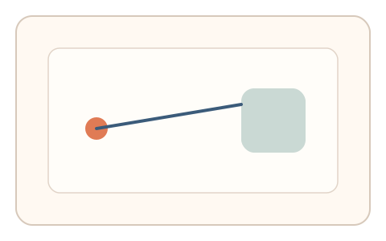
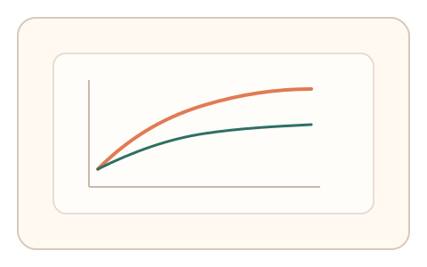

#8
生物肌肉与鼠标运动
已扩展
两段式速度曲线
捕捉“先快后细”的双阶段运动轨迹，以速度曲线结构区分人机。
概念原文
让用户快速移动到大致区域后，再进行精细对准，系统捕捉“快速弹道 + 细微修正”的速度曲线与减速波形。人类会出现典型的“先快后细、末端抖动”的双阶段轨迹。
用运动学曲线结构验证“生物控制机制”，而不是任务内容本身。
研究背景
人类在快速指向任务中通常呈现速度‑精度权衡：先进行快速弹道运动，再进入细微修正阶段。该双阶段结构在速度曲线与末端抖动上具有稳定形态，可作为无需答案的行为验证信号。
核心机制
- 要求用户快速移动到目标区域，再进行精细对准。
- 记录速度曲线的峰值、减速段与末端微调。
- 提取双阶段曲线结构与比例关系。
- 多次短任务提高稳定性。
用户流程
- 步骤 1：用户看到目标区域与精细对准提示。
- 步骤 2：用户快速移动后进行末端微调。
- 步骤 3：系统分析速度曲线并判定。
判定信号
速度曲线的双阶段结构
人类运动通常呈现快速弹道 + 细微修正。
末端微调次数与抖动幅度
末端修正是人类精细控制的典型特征。
判定逻辑
检测速度曲线是否包含明显峰值与减速段，并要求末端出现有限次数的微调；若全程平滑或过度精准则判异常。
对抗面
- 脚本基于模型生成双阶段曲线
- 重放真实用户轨迹
防御与缓解
- 随机目标大小与距离，改变速度曲线比例
- 引入微扰或轻微延迟，检测适应反应
- 结合抖动谱与反应时进行多信号判定
可达性与风险
提供更大目标与更长时间窗口，允许用户选择慢速模式完成。
- 输入设备差异影响速度曲线形态
- 低性能设备延迟可能扭曲末端修正
可视化状态

状态 1：快速移动
用户先快速进入目标区域。

状态 2：末端微调
进入细微修正阶段，产生末端抖动。

状态 3：速度曲线
双阶段速度曲线结构用于判定。
参考资料
Speed–accuracy tradeoff
说明速度‑精度权衡与双阶段动作特征。
Motor control
说明人类运动控制的基本机制。